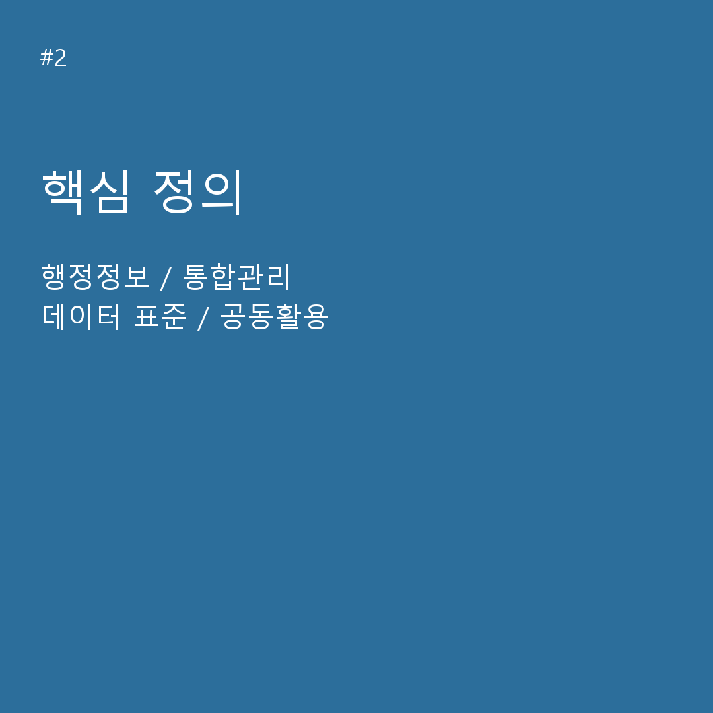
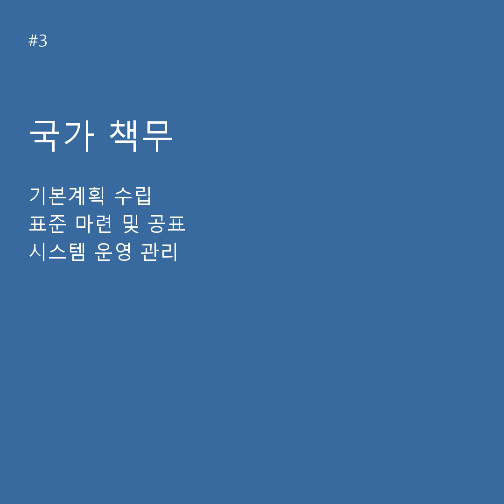
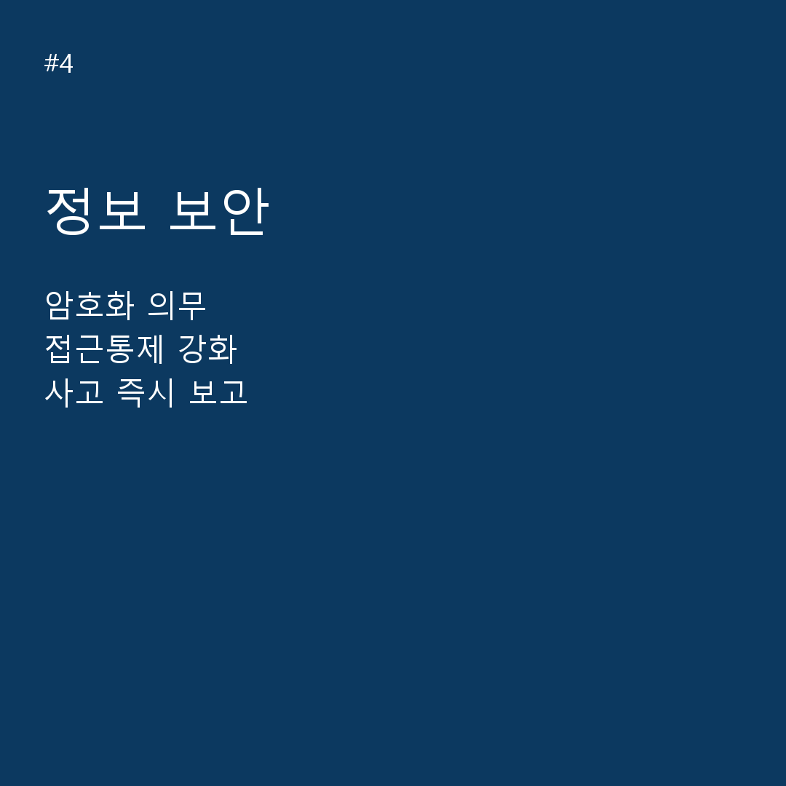

QUICK GUIDE
카드뉴스로 먼저 이해하기




첨부 카드뉴스 원본입니다. 세부 내용은 아래 조항 본문을 확인하세요.
ARTICLE EXPLORER
조항 찾아보기
첨부 조항 데이터JSON 다운로드 ↓
불러오는 중…
조 번호 순검색 결과가 없습니다
다른 키워드로 검색해 보세요.
QUICK GUIDE



첨부 카드뉴스 원본입니다. 세부 내용은 아래 조항 본문을 확인하세요.
ARTICLE EXPLORER
불러오는 중…
조 번호 순다른 키워드로 검색해 보세요.